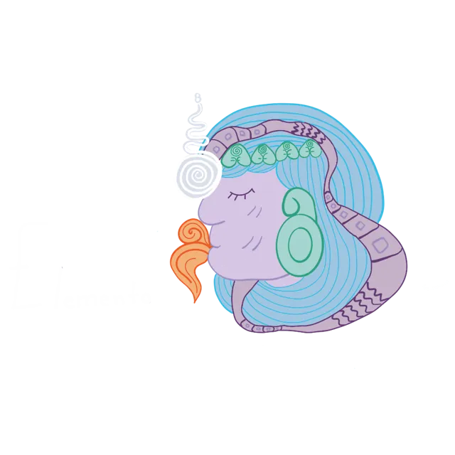
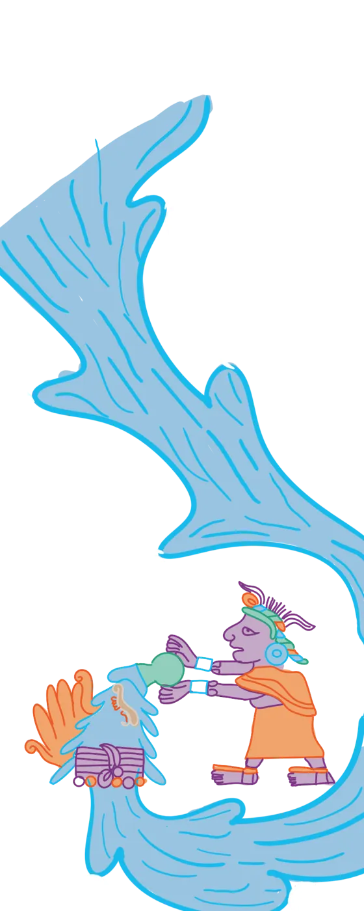

RED NEPHILA · 4 ELEMENTOS
Una red de apoyo mutuo.
Respeto, consumo responsable y colaboración: otra forma de encontrarnos y de recorrer el mundo.
Quiero colaborar ↗
OTRAS FORMAS DE VIAJAR
Nuestra visión
Apoyamos a productores y comerciantes locales, cuidamos los saberes ancestrales y respetamos la tierra y a quienes la habitan. Buscamos un turismo que no gentrifique y que haga posibles intercambios genuinos.
Conectar desde lo que compartimos
La red de 4 Elementos reúne a personas que quieren viajar de acuerdo con sus valores. Un espacio para conectar con otros viajeros, compartir otras formas de vida y participar en una economía circular y ética.
Leer el folleto de turismo ético ↗
EXPERIENCIA 4 ELEMENTOS
Tu rol como colaborador o colaboradora
Da a conocer la Experiencia 4 Elementos e invita a otros viajeros a participar en los Daytrips. Por cada participante que traigas recibirás una comisión.
Beneficios de colaborar
- Formar parte de una red colaborativa de economía circular y ética.
- Recibir apoyo de la red de 4 Elementos.
- Generar ingresos por los participantes que invites a los Daytrips.
El programa también contempla posibles comisiones extra y descuentos en establecimientos de la red al superar las expectativas. Consulta con el equipo las condiciones y los beneficios vigentes.
Hospedajes de la red
Para conocer los hospedajes participantes y sus beneficios actuales, contacta con el equipo de Red Nephila.
Consultar hospedajes ↗RED NEPHILA
¿Quieres formar parte?
Cuéntanos sobre ti en el formulario de colaboración. El equipo se pondrá en contacto contigo.
Quiero colaborar ↗